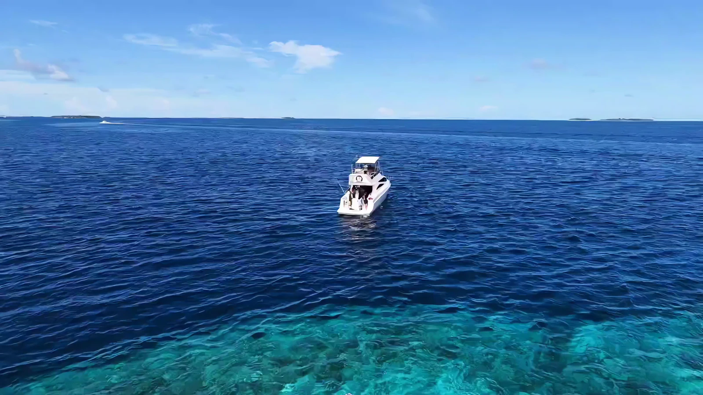
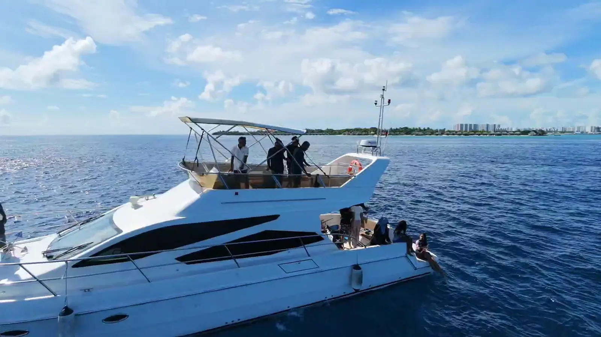
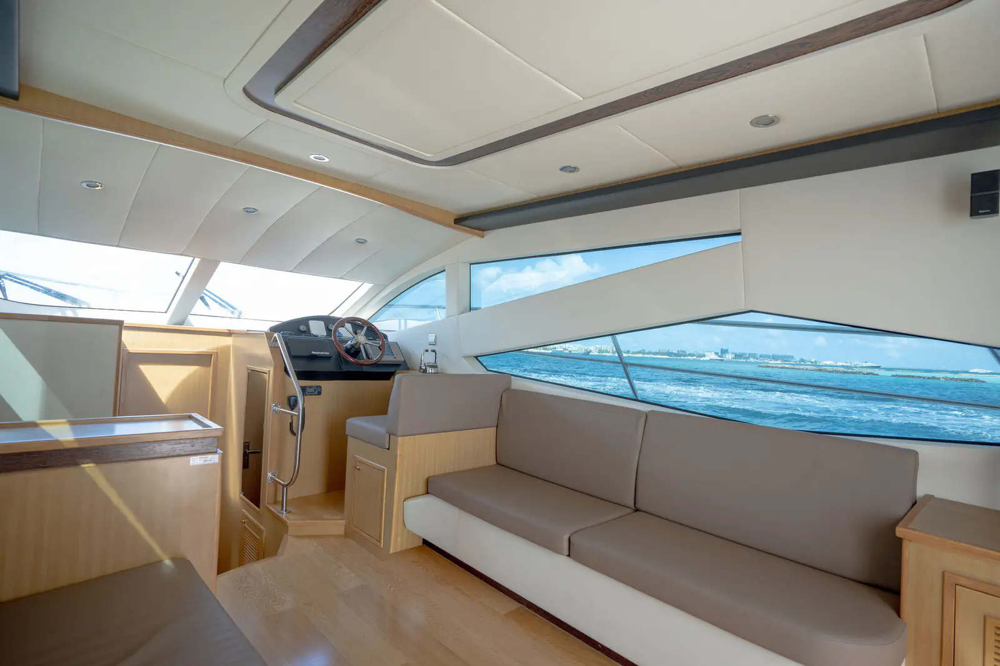
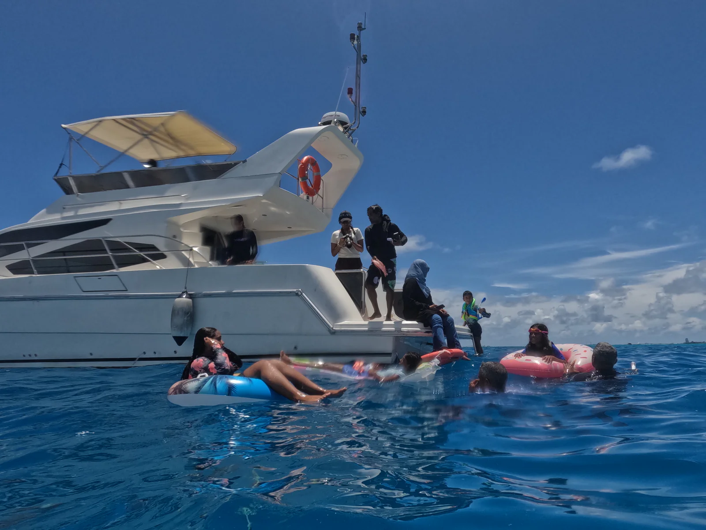
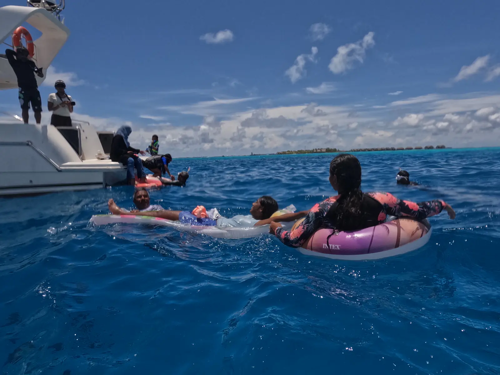

Fourteen metres
Built for long, flat water
A flybridge cruiser stripped back and refitted in 2025, run by a crew of three. Twelve aboard for the day, four asleep on the water.
14.2mLength
12Guests
2Cabins
3Crew
01
Flybridge
Upper helm, sun pads and a shaded lounge — the best seat for a crossing.

02
Salon
Air-conditioned, full-height glass on both sides, and a table that seats six.

03
Cockpit & platform
Shaded aft deck, boarding ladder and a bathing platform at water level.

04
The water
Mats, rings and snorkelling gear go in the moment the anchor sets.

Specification
On paper
- Type
- Flybridge motor yacht
- Beam
- 4.3 m
- Draft
- 1.1 m
- Cruising speed
- 18 knots
- Maximum speed
- 26 knots
- Guests overnight
- 4 in two cabins
- Crew
- Captain, chef and deckhand
- Built / refit
- 2016 / 2025
- Flag
- Maldives · Malé
- Berth
- Hulhumalé Marina
Aboard
What is on board
- Air-conditioned salon and cabins
- Two en-suite heads with showers
- Freshwater deck shower
- Snorkelling and fishing equipment
- Bluetooth audio throughout
- Shaded flybridge lounge
- Bathing platform and ladder
- Chilled storage and ice
- Life jackets for all ages
- Radar, GPS and VHF

Capacity